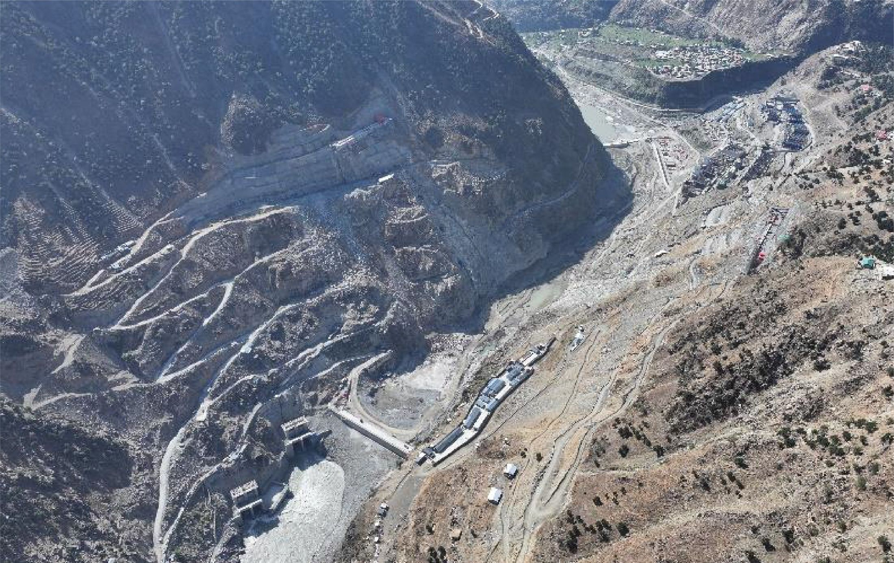

- a work front
- a load of material
- a crew
- a machine
- a crew
The world needs a new way to build.
Meet , the project operating system.
We can’t house, power and connect eight billion people with the fractured way the world builds today. Indus is rebuilding it from the ground up: a single operating system where every part of a project connects, so the project itself can think and act.
The world’s oldest industry, reimagined from the ground up.
Every crew, machine and load on a site like this, in one system.
We built the world. But never built the machine that builds it.

Roads, dams, cities, power plants, buildings: every physical thing around us was delivered by engineering and construction. It is the largest industry on earth, at $15 trillion a year.
And its greatest work is still ahead: the build now coming is the largest in the history of human civilization.
What keeps us up at night is one question: how will the world deliver it? The industry carrying humanity’s future still fights the battles it has always fought.
- Productivity, stalled for decades.
- Cost and schedule overruns, the norm rather than the exception.
- Quality failures, still making headlines.
The answer is not another tool on the pile.
The industry has thousands of tools, each holding a fragment of the project. What’s missing is the machine: an operating system, one place where every part of a project connects, understands itself, and acts. Connect the work, and it begins to think.

Your whole project, running as one system.
The first system built to run the work itself: connecting every signal, reasoning over the whole, and turning your project into one that can think and act.
- The coreyour project, live
- The beamsevery signal, connected
- The nodesevery function, on one picture
How it thinks
A living loop runs continuously over the work.
Each turn makes the next sharper: the project learns as it is built.
- 1SenseRead the project’s true state from the ground, live.
- 2UnderstandSet it against what you know and the science of the work.
- 3ForeseeSee what’s coming before it lands on the programme.
- 4AdaptReshape the plan against the live operation.
- 5ActPut the call in front of the right person, and move. Then back to Sense.
Drawn on the rim of a real shaft excavation: the loop runs where the work is.
What it connects
Every function, on one live picture of the work.
Today each function runs in its own tool, blind to the rest. In DiPGOS they all run on one live picture of the job, so schedule, cost, supply chain, quality and safety finally move together.
Functions that run themselves: driven by the work, approved by you.
- Autonomous SchedulingThe plan drives itself off the live process.
- FinanceCost and value move with the work.
- Supply ChainMaterials sequenced to the real plan.
- Risk ManagementExposure caught before it bites.
- Resource ManagerPeople and plant, put where they pay.
- Document ManagerThe right revision, tied to the work.

Every function runs on one foundation.
Operational Management
How the work is actually going, on the ground: captured live, where delivery is won or lost.
- Productivity
- Quality
- Health & safety
The intelligence does the heavy lifting; you approve. Every function runs itself, and you stay in command.
Where you run it
The command center, not a dashboard.
The operational command center your team runs the work from, and takes decisions in. One place: where the work stands, what it’s made of, and how it’s performing.
 Where
What
How
Where
What
How
WhereThe live map, the epicentre of activity.
WhatScope, blocks and work fronts.
HowProductivity, quality and safety.
Action & command
Approve, escalate, change, resolve: every action taken inside the system, in context, on the record. Alarms, decision engine, change manager, notifications, collaboration: command lives where the work lives.
Decision intelligence
Your knowledge repository, historic projects and contracts, reasoned against the live operation the moment a decision is made.

One system, from the first page of the tender to the last pour.
A bid is priced in one set of spreadsheets, planned in another, built against a third and reported in a fourth. DiPGOS carries the same requirements, resources and operations all the way through, so the numbers you bid are the numbers you build against.
1Read the tender
Upload the package. DiPGOS extracts the synopsis, client, value, dates and bid bond, and runs bid / no-bid with the right approvals.
CPDS2Understand the requirements
Extracted for six disciplines and mapped to the project’s areas. Engineers approve them; nothing goes forward unchecked.
CPDS3Build the proposal
Requirements become deliverables, then operations with their crews, equipment and materials. Schedule and cost derive themselves.
CPDS4Export the bid
The budget sheet comes out in Excel and the proposal in Word, with commercial buffers applied.
CPDS5Book real resources
Planned resource types become real, booked people, machines and materials, with work fronts, critical path and baselines.
Atom Manager6Control construction
Every project, from portfolio to a single operation, on a live map. Site teams report; alarms flag deviations.
ACCSOperate, later
Planned, not built.
AOS
Mutlashi, the built-in assistant, answers questions on the documents and live data behind each step.
Applied & Physical AI
AI can only act on ground it understands. We build the ground.
Everyone is racing to put AI to work. But an agent is only as good as what it understands, and in construction, that understanding never existed.
DiPGOS builds the layers AI must stand on: the meaning, the relationships, the operational sciences and the physics of the work. Give AI that ground, and it can finally reason and act on real projects.
- Applied AI, human in commandAI does the heavy lifting; your engineers stay in command.
- Semantic & knowledge layerThe meaning and context of your project.
- Operational relationshipsHow work sequences, depends and constrains.
- Physics & operational sciencesHow things really behave on the ground.
Electricity. The internet. AI. The value was never in the raw technology. It was in the application layer built on top. We are that applied layer for engineering & construction.
Ask your project anything.
Mutlashi, the built-in assistant, has read every tender, spec and drawing in your project. It answers with the source, uses a calculator rather than guessing figures, and stays inside the project you’re working in.

We lived the problem before we built the answer.
Indus is built by engineers and builders who spent their careers inside real projects, feeling the gridlock first-hand. We’re not software people guessing at the industry. We’re industry people building the system we always needed.
Founded by M. Kamran Basit, Founder & CEO
Built first for dams and hydropower. Running today on an RCC dam in northern Pakistan.†